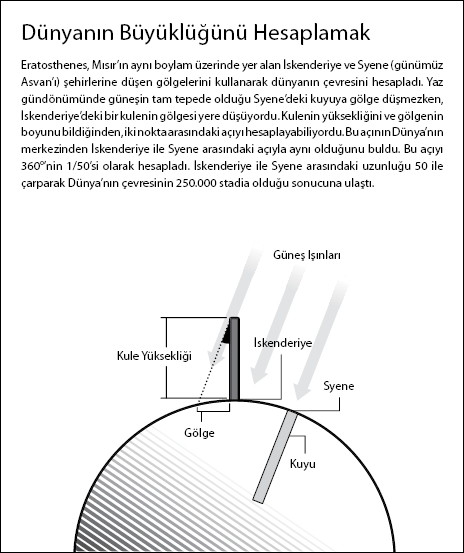

Dünyamızın düz olduğu dogmasını çürütmek
Sir Paul Nurse, Nobel Ödülü sahibi ve Royal Society Başkanı
Dünya'nın dev bir kaplumbağanın üzerinde durduğu düşüncesi bazılarımıza ne kadar saçma gelse de, bu düşünce Hindu, Çin ve hatta Amerikan yerlilerinin mitolojilerinde vardı. Aslında gezegenimizin doğası hakkında şimdi çok tuhaf görünen fikirler tarih boyunca pek çok kültürde yer aldı. Asırlar boyunca Akdeniz ve Mezopotamya toplumları, Dünya'nın bir kara kütlesinin, merkezinde Akdeniz'in olduğu ve onun da dosdoğru Dünya'nın kenarlarına uzanan bir okyanus tarafından çevrelendiği madeni para şeklinde bir disk olduğuna inanmışlardı. Bu fikir ancak MÖ 500 civarında Yunan filozof Pisagor tarafından sorgulanmaya başladı.
"Dünya'nın yuvarlak olduğunun keşfedilmesi çok önemlidir, çünkü bu bize bildiğimizi düşündüğümüz şeylere kuşkuyla yaklaşmayı öğretir."
Paul Nurse
Onun hakkında yazılanların çoğu tahminden ibaret olmasına rağmen, Pisagor'un günümüzde İtalyan kenti Calabria olan Croton'da bir din okulu kurduğu biliniyor. Bu "gizli kardeşlik" okulu binlerce takipçiyi kendine çekti. Pisagor'un mistik felsefesini öğrendiler; katı ve biraz da garip kurallar doğrultusunda vejetaryen bir hayat sürdüler, etrafta yalın ayak dolaştılar, belirli kıyafetler giyip gizli bir sembol (beş köşeli bir yıldızın etrafında bir beşgen) taşıdılar.
Herhalde en çok kendi adını taşıyan matematik kuramıyla tanınan Pisagor, Dünya'nın yuvarlak olabileceğini öne süren ilk kişiydi. Kuramı destekleyecek sağlam kanıta sahip değildi, fakat tanrıların dünyayı en mantıklı ve en güzel şekilde, yani bir küre olarak yarattıklarına inanıyordu. Yaklaşık yüzyıl sonra Platon bu düşünceyi destekleyerek, bizi dengelemek için dünyanın diğer tarafında başka bir kara kütlesinin olması gerektiğini savundu, ama bu düşünce de felsefi bir varsayımdan öteye geçmiyordu.
Dünya'nın yuvarlak olduğuna dair bilimsel kanıt öne sürmek, Platon'un öğrencilerinden Yunan filozof Aristo'ya düştü. "O zamanlar sağduyu sahibi herkes Dünya'nın düz olduğunu görebiliyordu," diyor Nurse. "Ama Aristo işin doğrusunu biliyordu. Zira takımyıldızların gökyüzünde güneye doğru giden bir yolcu gibi gözüktüğünü ve ay tutulması sırasında Dünya'nın Ay'a düşen gölgesinin yuvarlak olduğunu gözlemlemişti. Bu iki gerçek Dünya'nın aslında yuvarlak olduğunu kanıtlıyordu."
MÖ 330 civarında çoğu insan bunu bir gerçek olarak kabul ediyordu. Fakat bir soru akıllara takılıyordu: Dünya ne kadar büyüktü? De Caelo (Gökler Üzerine) adlı çalışmasında Aristo gezegenimizin bazı diğer gök cisimlerinden daha küçük olduğu sonucuna vardı. "Her şey Dünya'nın yuvarlak olduğunu ve çok da büyük bir hacme sahip olmadığına işaret ediyordu, aksi halde küçük bir yer değişiminin etkisini hemen görmek mümkün olmazdı."
Bilginler, Dünya'nın büyüklüğünü hesaplamak için yıllarca çalıştı, sonunda MÖ 240 civarında Yunan matematikçi Eratosthenes tarafından hesaplandı. Mısır'ın dışına adım atmayarak gezegenin çevresinin 250.000 stadia (40.555 km) olduğunu hesapladı. İnanılmaz şekilde bu sayı, günümüzde kabul edilen sayıdan sadece 40.072 km, yani yüzde 1'den daha az oranda farklıdır.
